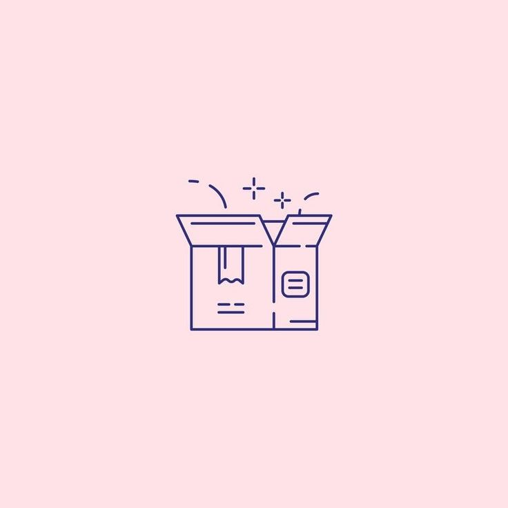
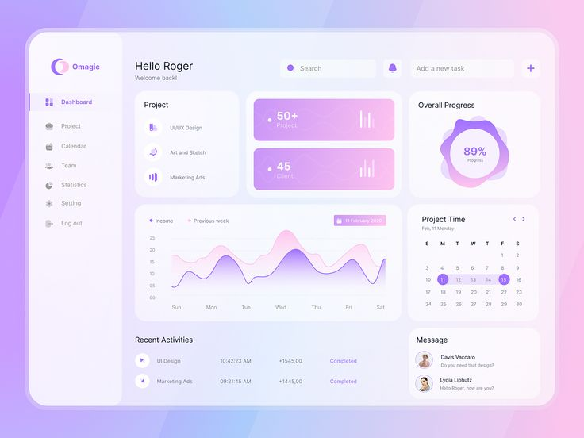

スイートプロジェクト
複雑さの層を持つおいしく作られたアプリケーション
フルスタック
3ヶ月

🍓
ベリーインテリジェントチャットボット
React
Python
GPT-4
Flask
自然言語処理でユーザーがレシピと料理のインスピレーションを見つけるのを支援するコンテキスト対応型AIアシスタント。
Eコマース
6ヶ月

🫐
ブルーベリーショップ
Next.js
Node.js
MongoDB
Stripe
リアルタイム在庫管理、安全な決済、およびAI駆動の商品推奨機能を備えた完全機能のEコマースプラットフォーム。
コンピュータビジョン
4ヶ月
🍒
チェリービジョン
PyTorch
React Native
TensorFlow
AWS
コンピュータビジョンを使用して植物を識別し、お手入れ方法と成長追跡を提供するモバイルアプリ。
データ可視化
3ヶ月

🍇
グレープアナリティクス
D3.js
Vue.js
Python
FastAPI
ビジネスインテリジェンスと意思決定のための予測分析を備えたインタラクティブなデータ可視化ダッシュボード。
おすすめプロジェクト
ベリースマートホーム
スマートホームデバイスをAIでインテリジェントな自動化、 エネルギー最適化、およびホームセキュリティ強化のために統合する包括的なIoTプラットフォーム。 ユーザーの習慣から学習し、最大の快適さと効率性のためにホーム環境を適応させる機械学習を活用しています。
React
TensorFlow
Node.js
MongoDB
Raspberry Pi
MQTT